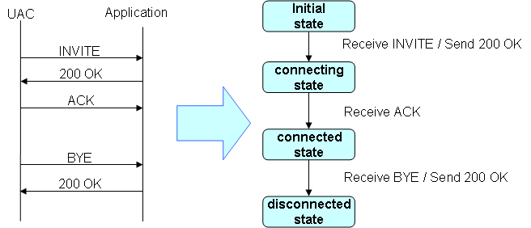
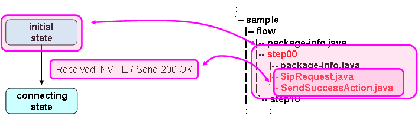
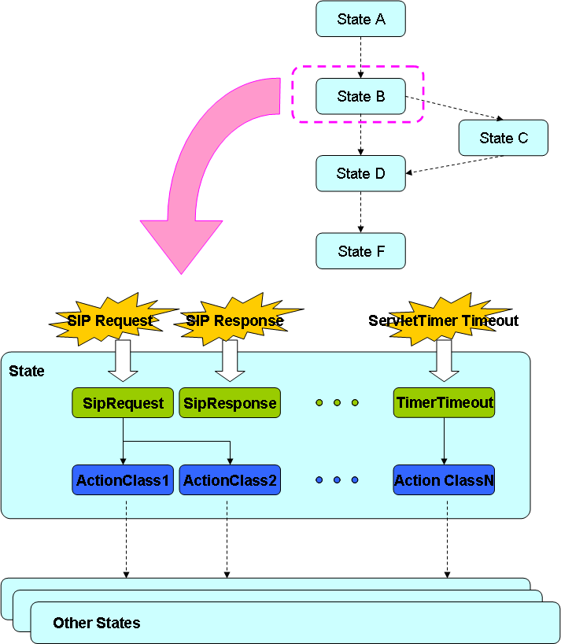

sf-flow-api
About sf-flow
sf-flow is the framework for SIP application that extended sf-core.
Development approach of sf-flow
Development step is below.
- Create a state transition diagram
- Implement the application
There is two reasons for creation a state transition diagram at first. The first, in SIP application, it is important to design the state transition diagram. The second, sf-flow is designed that developper can develop an application from the state transition diagram. If use sf-flow. an application is developed by creatiing states, implementing events, actions, and state transitions.
For example, the application at Fig.1.
Fig.1 Sequence chart and state transition diagram of the sample application
The application is right side of Fig.2 that implemented by using sf-flow based on the state transition diagram.
Fig.2 Example of implementation using sf-flow
By sf-flow, a state is provided as java package. In the Fig.2, the "initial state" is the state00 package.
There are already defined classes that be called when a event occurred. For example, SipRequest class is called when the appliation server received a SIP request. The classes are named "Evaluate Class". Evaluate Class should be implemented matching between Event and Action. In the Fig.2, SipRequest should be implemented as, If received SIP request is INVITE, select the class that send 200 OK.
The class is named Action Class that selected by Evaluate Class. Action Class should be implemented action and state transition. In the Fig.2, Action Class is SendSuccessAction. Developer implements SendSuccessAction to "sending 200 OK for INVITE" and "transition to connecting state".
And so on, Developer implements "connecting state", "connected state" and "disconnected state".
Development approach will be described in detail later.
Abstract of development approach of sf-flow
This section describes abstract of development approach of sf-flow.
Developer implements a application by creating states of sf-flow. The conceptual diagram of the states is Fig.3.
Fig.3 The conceptual diagram of states of sf-flow
- State
The aqua square is State. Developer create Evaluate Class and Action Class in the State.
- Evaluate Class
The green square is Evaluate Class. Developer implements Evaluate Class to matching between Event and Action.
Evaluate Class is called when occurred Events. In sf-core, beans are minutely called. For example, "received the INVITE", "received success response", etc... But In sf-flow, Evaluate Classes are coarsely called. For example, "SIP request", "SIP response", etc... Therefore developer implements conditional branching, if developer needs.
Events that are trigger of calling Evaluate Class are below.
- received SIP request
- received SIP response
- timed out ServletTimer
- cannot received ACK or PRACK
- expired SipApplicationSession
- called by Web
- Action Class
The blue square is Action Class. Action Class should be implemented Action and state transition.
These implementation details are described in the following.
Implementation details of sf-flow
Implementation details is Fig.4.

Fig.4 Implementation of sf-flow
Create FlowRoot
All States are created in single package. The package is named FlowRoot.
The package-info.java of FlowRoot should be annotated with @FlowRoot.
For Fig.4, FlowRoot is "flow" package. The package-info.java of "flow" package is below.
@FlowRoot(startState="state1") package sample.flow; import org.mobicents.ssf.flow.configuration.FlowRoot;
Create State
State is created by attaching @State in the package-info.java
The package-info.java of State is below.
@State(name="step00") package sample.flow.step00; import org.mobicents.ssf.flow.configuration.State;
Create Evaluate Class
Evaluate Classes are created in the State package. The names of Evaluate Class are determined. The names are below.
Table.1 Event types and names of Evaluate Class
| Event Type | Java Source File Name |
| received SIP request | SipRequest.java |
| received SIP response | SipResponse.java |
| timed out ServletTimer | TimerTimeout.java |
| expired SipApplicationSession | SipApplicationExpired.java |
| cannot received ACK or PRACK | SipErrorOccurred.java |
| called by Web | Dispatcher.java |
Developer should be attach @Evaluate to method of Evaluate Class. The method will be called when occurred Event.
Developer should set Action Class. There are two setting places.
- value of ＠TransitionSet
- return value of method
Developer should conform value of @TransitionSet to value of @TransitionSet must conform to return value of method. And if there are some return values of method, developer code comma-deliminated values of @TransitionSet.
The Class whose name is return value(is made the first caraster to uppercase, and added suffix as "Action") is ActionClass.
Evaluate Class example is below.
package com.oki.sample.b2bua.flow.step00;
import javax.servlet.sip.SipServletRequest;
import org.mobicents.ssf.flow.annotation.Evaluate;
import org.mobicents.ssf.flow.configuration.TransitionSet;
@TransitionSet(values={"forwardInvite"})
public class SipRequest {
@Evaluate
public String evaluate(SipServletRequest req) {
if (req.isInitial() && "INVITE".equals(req.getMethod())) {
return "forwardInvite";
}
return null;
}
}
In this case, If received INVITE request, "ForwardInviteAction" will be called.
Create Action Class
Action Classes are created in State package. Action Class is named "return value of evaluate method + Action"(The first caracter is capitalized).
Developer should implement the method attached @Transition. The method is called after Evaluate Class.
And Developer should set next State at @Transition. After the Action Class, application state changes next state that set @Transition.
Action Class example is below.
public class ForwardInvAction {
@Transition("step10")
public void execute(SipServletRequest req, SipFactory factory, PeerLocation peerLocation) throws Exception {
// create HeaderMap
SipURI uri = (SipURI)peerLocation.getAddress(req.getFrom(), req.getTo()).getURI();
Map<String, List<String>> map = HeaderMapUtil.createHeaderMap("To", uri.toString());
// create new INVITE Request
B2buaHelper helper = req.getB2buaHelper();
SipServletRequest invite = helper.createRequest(req, true, map);
invite.setRequestURI((URI)uri);
SipContentUtil.copy(req, invite);
// send INVITE Request
invite.send();
}
}
Using Maven2Archetype
It takes long to do above manually.
But, Here is Maven2Archetype for sf-flow. Developer can easily develop applications by using the Maven2Archetype that generate Java source file and configuration file for sf-flow.
Next page describe Maven2Archetype for sf-flow.